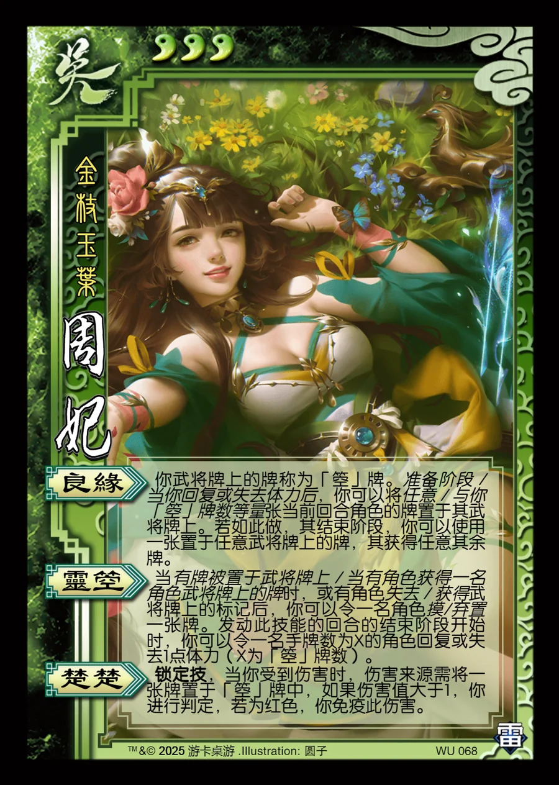

点击卡面查看大图
吴
周妃
♥3金枝玉叶
良缘
你武将牌上的牌称为「箜」牌。准备阶段 / 当你回复或失去体力后，你可以将任意 / 与你「箜」牌数等量张当前回合角色的牌置于其武将牌上。若如此做，其结束阶段，你可以使用一张置于任意武将牌上的牌，其获得任意其余牌。
灵箜
当有牌被置于武将牌上 / 当有角色获得一名角色武将牌上的牌时，或有角色失去 / 获得武将牌上的标记后，你可以令一名角色摸/弃置一张牌。发动此技能的回合的结束阶段开始时，你可以令一名手牌数为X的角色回复或失去1点体力（X为「箜」牌数）。
楚楚锁定技
锁定技，当你受到伤害时，伤害来源需将一张牌置于「箜」牌中，如果伤害值大于1，你进行判定，若为红色，你免疫此伤害。